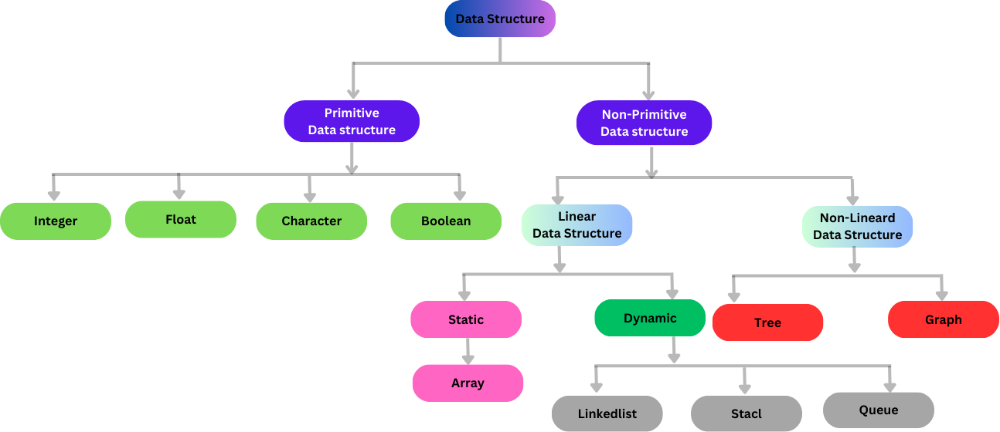

Welcome to my blogpost series on data structure. In this blogpost series, we will be exploring computer data structures, so make sure to sit tight and make sure you are not in a distracted environment.
We will start by discussing what a computer data structure is, why you need to have the knowledge of data structures as a computer programmer, then we will discuss, implement (using Go programming language) some of these types of data structures and situations where we can use them. Before we get started on data structure, let discuss about “Data”. So, “what is data?”.
According to Wikipedia: In common usage and statistics, data is a collection of discrete or continuous values that convey information, describing the quantity, quality, fact, statistics, other basic units of meaning, or simply sequences of symbols that may be further interpreted formally. In a simpler term, data is basically collection of recorded facts and figures, like numbers, words, measurement, observation, or anything that can be stored and used for reference. Now the question is how data are stored in a computer and the answer to that is “memory”, we all know that computer memory is where computer store data and there are different types of computer memory, but the blogpost series is about computer data structure and not computer memory, so we won’t go into computer memory, but maybe I might create a blogpost series on computer memory in the future.
Now that we all know what data is and where it is stored in the computer, it’s time we discuss data structure. I believe we all know what the word “structure” means, anyways it means arrangement or organization.
Data structure is the efficient organization/arrangement/structuring and management of data in computer memory. Data structure allows us to organise and store our data in computer memory for fast access and efficiency use. There are different types of data structures, and they are suited to different kinds of applications, some are very specialised to a particular task. For example, the stack data structure is mostly used for redo-undo features.
You need to know about computer data structure as a computer programmer for several reasons and some of these reasons are:
Resource Utilization: Data structures help in managing computer memory and other resources effectively, therefore reducing wastage.
Efficient Algorithm: Algorithms rely on data structures to organize and process data efficiently. For example, search algorithm may be faster when implemented with a particular data structure e.g. binary search.
Complex Problem Solving: Data structures make it easier to manage complex data and an easy to manage data will help you when working on a complex problem, meaning it will make it easier to solve complex problems. For example, graph data structure makes it easier to create a relationship between entities.
In this section of this article, we are going to be discussing some different types of data structures and an application example of some of this mentioned data structures. There are many different types of data structure, but we are going to categorize them into two sections, which are primitive and non-primitive data structures.
Recap: Remember we said computer memory is where computers store data, while data structure is how these data are organized in memory for fast access and efficient use.
Primitive Data structure: In simple definition, primitive data structures are the types of data structure that can hold a single value of a specific type in a specific location in computer memory. Example of primitive data structures are:
Primitive data structures, also known as basic data types, are the basic building blocks of data and they cannot be subdivided but they can be organized within more complex data structures. For example, Array allows one to store a collection of elements of the same data type, so we can have an array of integers, floats, character, Boolean, etc.
Non-Primitive Data structure: In simple definition, non-primitive data structures are the types of data structure that can hold more than one value either in a contiguous location in computer memory or in a random location. Example of non-primitive data structures are.
Unlike a primitive data structure, a non-primitive data structure can be subdivided into linear and Non-linear data structures in which linear data structures organize and store data in a contiguous location in memory, while Non-linear data structures organize data in a random computer memory location. Although not all linear data structures organize and store data in a contiguous memory. for example, a LinkedList. In a linked list, data are not organized and stored in a contiguous memory location instead they are linked using a pointer. So, we can say a linear data structure organizes and stores data sequentially.
Example of Linear and Non-Linear data structures are:
Linear Data Structure:
Non-linear Data Structure:
This section of the article gives some examples of a situation in which some of the data structures mentioned above can be used.
Great!
You made it to the end of this article. I hope you find it
interesting and informative, and I hope that now you know what data
structures are, why you need them, the types of data structures and
situations in which you can use some of these data structures. In the
coming articles, I am going to be discussing and implementing some of
these data structures using Go programming language.